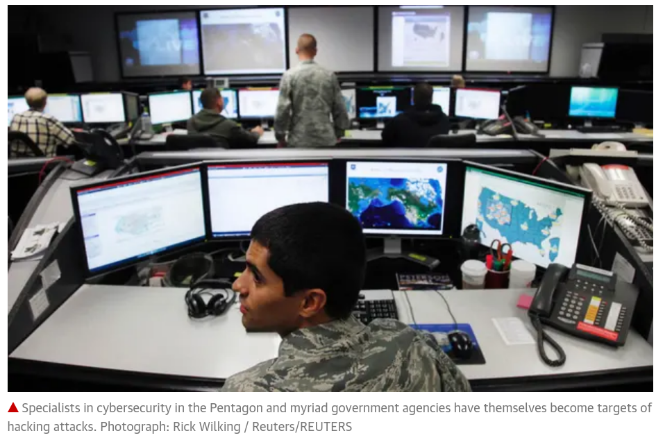
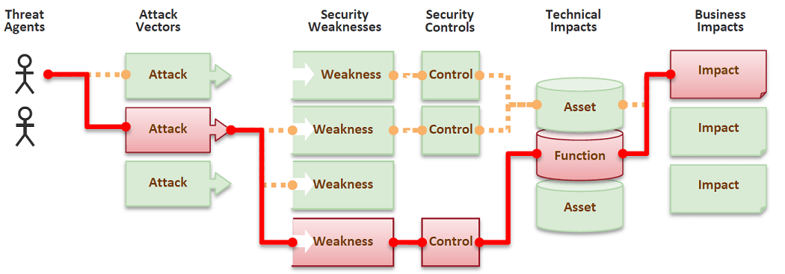
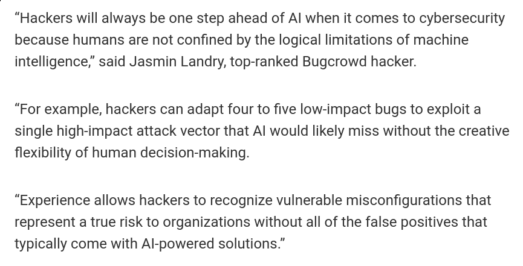
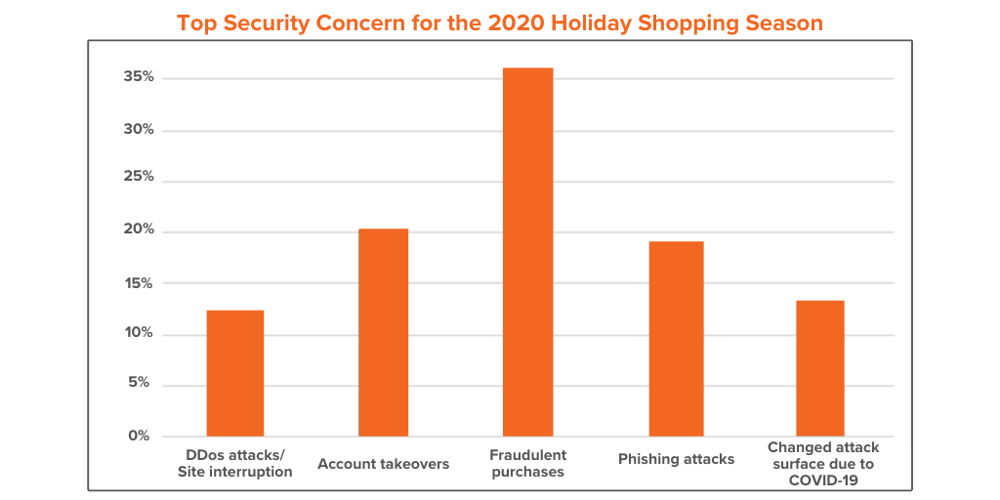
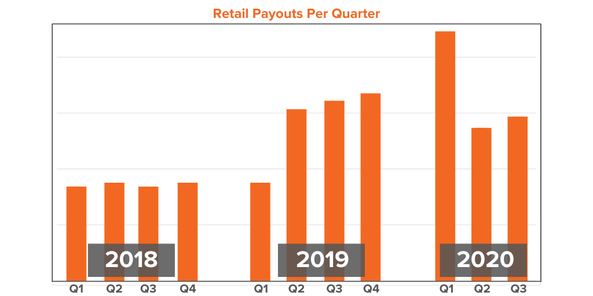
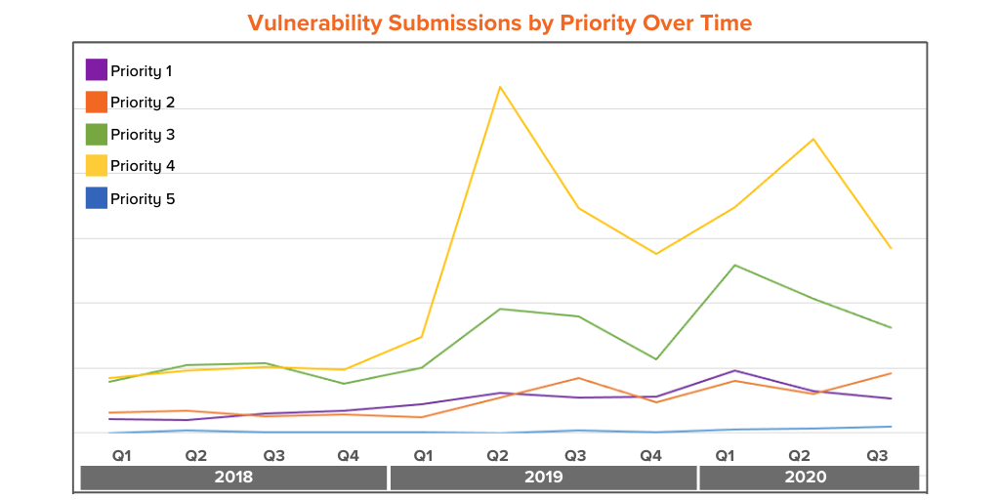
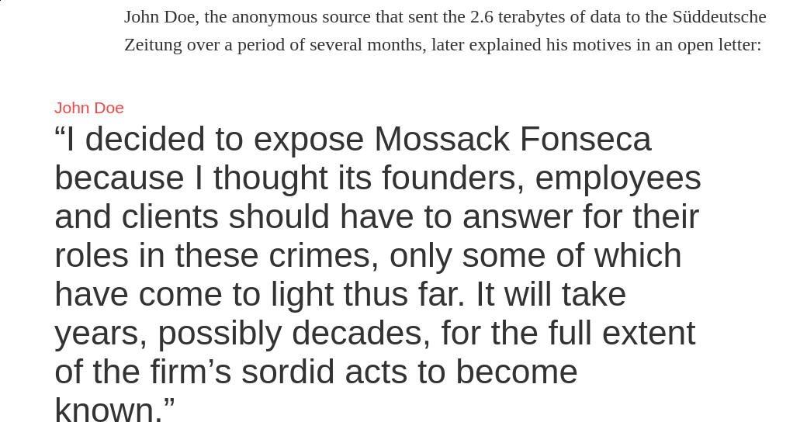

<!doctype html>
<html lang="sv">
<meta charset="utf-8" />
<title>attacks | itsec</title>

<!-- Mithril HTML Slideshow styles -->
<link href="css/mithril-slideshow.css" rel="stylesheet" />

<!-- Code formatting using highlight.js -->
<link rel="stylesheet" href="css/default.css">
<link rel="stylesheet" href="css/tomorrow.css">
<script src="js/highlight.pack.js"></script>

<!-- Text formatting using Markdown through showdown.js -->
<script src="js/showdown.min.js"></script>


<!-- Here comes the slides in order -->
<script data-role="slide" data-markdown type="text/html">
# Information Security
## Web Applications
### Attacks
#### Mikael Roos
</script>


<script data-role="slide" data-markdown type="text/html">
# Agenda

* Security in general
* Web Application Security
* Examples
* Aim -> Establish an awareness of attacks and threats

</script>


<script data-role="slide" data-markdown type="text/html">
# [Exploits of a Mum](https://xkcd.com/327/)


</script>


<script data-role="slide" data-markdown type="text/html">
# Heartbleed


</script>


<script data-role="slide" data-markdown type="text/html">

</script>


<script data-role="slide" data-markdown type="text/html">
# What does a hacker want?

* Control
* Resources
* Own agenda, activist
* Feel the power, "I own you"
* A challenge and show off "I can do it"
* Fun of problem solving
* Money

</script>


<script data-role="slide" data-markdown type="text/html">

</script>


<script data-role="slide" data-markdown type="text/html">

</script>


<script data-role="slide" data-markdown type="text/html">

<p>https://www.bbc.com/news/stories-51753362</p>
</script>


<script data-role="slide" data-markdown type="text/html">
# Hacker limitations?

* Is time a limit?
* Is knowledge a limit?
* Is resources a limit?
* Is there a limitation at all?

</script>


<script data-role="slide" data-markdown type="text/html">
# Hacker terminology

* Attack vector
* Weakness
* Exploit vulnerabilities
* Chain of event

</script>


<script data-role="slide" data-markdown type="text/html">

</script>


<script data-role="slide" data-markdown type="text/html">
# Ethical hacking

* Hacking with the permissions of the system owner
* To determine system vulnerabilities and weaknesses
* To test and validate an organisations
    * Information security measures
    * and maturity

</script>


<script data-role="slide" data-markdown type="text/html">

https://www.helpnetsecurity.com/2020/06/25/economics-of-security-research/
</script>


<script data-role="slide" data-markdown type="text/html">
# [Retail Cybersecurity: 2020 state of the industry](https://www.bugcrowd.com/blog/retail-cybersecurity-2020-state-of-the-industry/)
</script>


<script data-role="slide" data-markdown type="text/html">

</script>


<script data-role="slide" data-markdown type="text/html">

</script>


<script data-role="slide" data-markdown type="text/html">

</script>


<script data-role="slide" data-markdown type="text/html">
# Protect yourself

1. System
2. Protection
3. Attack
4. Defence
5. Restore

</script>


<script data-role="slide" data-markdown type="text/html">
# Grade the level of concern

* As system owner, grade low - high

    1. Cost to protect
    2. Probability to exploit
    3. Impact if breached
    4. Level of detectability
    5. Cost to restore

</script>


<script data-role="slide" data-markdown type="text/html">
# Grade the level of attractiveness

* As hacker, grade low - high

    1. Cost to breach
    2. Probability to exploit
    3. Impact if breached
    4. Level of detectability
    5. Gain if successful

</script>


<script data-role="slide" data-markdown type="text/html">
# What is the worst that can happen?

</script>


<script data-role="slide" data-markdown type="text/html">

</script>


<script data-role="slide" data-markdown type="text/html">
# Danger areas (web focus)

* Social engineering
* Physical access
* Host system
* System or services
* Web Application
* 3rd party
* Data storage

</script>


<script data-role="slide" data-markdown type="text/html">
# OWASP Top Ten 2017

1. Injection
2. Broken authentication
3. Sensitive Data Exposure
4. XML External Entites (XXE)
5. Broken Access Control
6. Security Misconfiguration
7. Cross-Site Scripting XSS
8. Insecure Deserialization
9. Using Components with Known Vulnerabilities
10. Insufficient Logging &amp; Monitoring

</script>


<script data-role="slide" data-markdown type="text/html">
# Example of some attacks
</script>


<script data-role="slide" data-markdown type="text/html">

# Spam is dangerous?

* [Style](https://arkiv.dbwebb.se/style//?id=157) ([spam](https://arkiv.dbwebb.se/style//?id=1999))
* [Guestbooks](https://dbwebb.se/forum/viewtopic.php?t=637&p=3737)

<!--
* [Forum](https://dbwebb.se/forum/viewtopic.php?f=21&t=8738)
-->

</script>


<script data-role="slide" data-markdown type="text/html">
# Raspberry pi

* Put it as a gateway to your home network
* Standard user pi:raspberry, forget to remove it
* Consequenses of a break in?
* How to protect?
* How to clean up?

</script>


<script data-role="slide" data-markdown type="text/html">
# `source.php`

* [`source.php?path=work/me.php`](https://arkiv.dbwebb.se/kod-exempel/source.php)
* As an aid in teaching and showing the source code of student submission on a live server

</script>


<script data-role="slide" data-markdown type="text/html">
# Shared server

* Consider a shared web server, like:
    * http://student.somewhere.se/~studa222
    * http://student.somewhere.se/~studa223
* Can we access other files?
* Do we share SESSION?
* How about secrets and database passwords?

</script>


<script data-role="slide" data-markdown type="text/html">
# Execute others code

* On the common student server, as when correcting submissions
* Locally, as when correcting submissions

</script>


<!--
<script data-role="slide" data-markdown type="text/html">

* [Best practice JWT login token](https://dbwebb.se/forum/viewtopic.php?f=11&t=8923)

</script>
-->


<script data-role="slide" data-markdown type="text/html">


</script>


<script data-role="slide" data-markdown type="text/html">

<iframe width="1024" height="720" src="https://www.youtube.com/embed/CYMR4BjHIeM" frameborder="0" allowfullscreen></iframe>

</script>


<script data-role="slide" data-markdown type="text/html">
# How to find an exploit

This means that we need to wait a full week in order to exploit our vulnerability, as this is the time frame that takes that draft to be deleted. Fortunately for us, tokens usually last 24 hours, allowing us to retrieve the token a day before the expected deletion date, and using it in order to get into ‘edit_post()’ after the draft gets deleted.

</script>


<script data-role="slide" data-markdown type="text/html">
# How to find an exploit...

Finally, after passing the token validation, the privileges validation, the basic admin validation, and the post ID validation, changing the post status to ‘trash’ is as simple as sending an HTTP parameter. Thank God.

</script>


<script data-role="slide" data-markdown type="text/html">
# How to find an exploit...

Combining all of these bypasses together, we use a chain of around a dozen different bugs, a faulty privilege system, and about every false assumption in the system to achieve partial editor privileges. The road to a critical vulnerability is still long, but at its end we found both a SQLi and an XSS, to be described in the next posts.

</script>


<script data-role="slide" data-markdown type="text/html">
# Stress the system

* A stressed web application can provide some useful error messages
* How about MySQL with "to many connections"?
* How about development information on a production server?

</script>


<script data-role="slide" data-markdown type="text/html">


</script>


<script data-role="slide" data-markdown type="text/html">

* Consequences on max connections on a shared server
* Production server -> no verbose error handling
* Log errors to file

</script>


<script data-role="slide" data-markdown type="text/html">

# Stolen website traffic

* Steal SEO and traffic
* [take 1](https://dbwebb.se/forum/viewtopic.php?f=21&t=6598) [take 2](https://dbwebb.se/forum/viewtopic.php?f=21&t=7306)
* Consider detect, impact, restore
* Update Apache configuration
    * Block known spambots
    * Block access by HTTP_REFERER

</script>


<script data-role="slide" data-markdown type="text/html">

# Stolen website identity

* Stealing identities [Iframe clickjacking](https://dbwebb.se/forum/viewtopic.php?f=23&t=7359)
* Consider detect, impact, restore
* Update Apache configuration

`Header always append X-Frame-Options SAMEORIGIN`

</script>


<script data-role="slide" data-markdown type="text/html">

# TimThumb Exploit

* [About it](https://blog.sucuri.net/2019/08/timthumb-attacks-the-scale-of-legacy-malware-infections.html) ([17602](https://www.exploit-db.com/exploits/17602))

</script>


<script data-role="slide" data-markdown type="text/html">
# Validate incoming

* Trust no one and no data
* Prepare unsecure data
* Validate incoming (server side)
    * JavaScript client side is not enough
* Check incoming value, domain and type
* Fail when corrupt input
* "Fail hard, fail early"
* Escape data on output

</script>


<script data-role="slide" data-markdown type="text/html">
# Final words

* You can never be completely secure
* What is the worst that can happen?
* Incident response plan
* Crash and recovery plan
* Restore your backup

</script>


<script data-role="slide" data-markdown type="text/html">
# Final words...

> Protect yorself with means neccassary that are defensible in economic terms and relates to a balance of your estimated

1. Cost to protect
2. Probability to exploit
3. Impact if breached
4. Level of detectability
5. Cost to restore

</script>


<script data-role="slide" data-markdown type="text/html">
# Learn more?


* Study OWASP Top Ten
* Learn the operating system (Linux or Windows) as a client and as a server
* Learn to write a server/service
* Study on how to write good and clean code
* Put a Pi as a gateway to your own home...
* Capture The Flag (CTF)

</script>


<script data-role="slide" data-markdown type="text/html">
# Last words

* Questions on that?

</script>


<script data-role="slide" data-markdown type="text/html">
<!-- empty slide by intention -->
</script>


<!-- include essential js-script -->
<script src="js/mithril.min.js"></script>
<script src="js/mithril-slideshow.js"></script>

</html>
